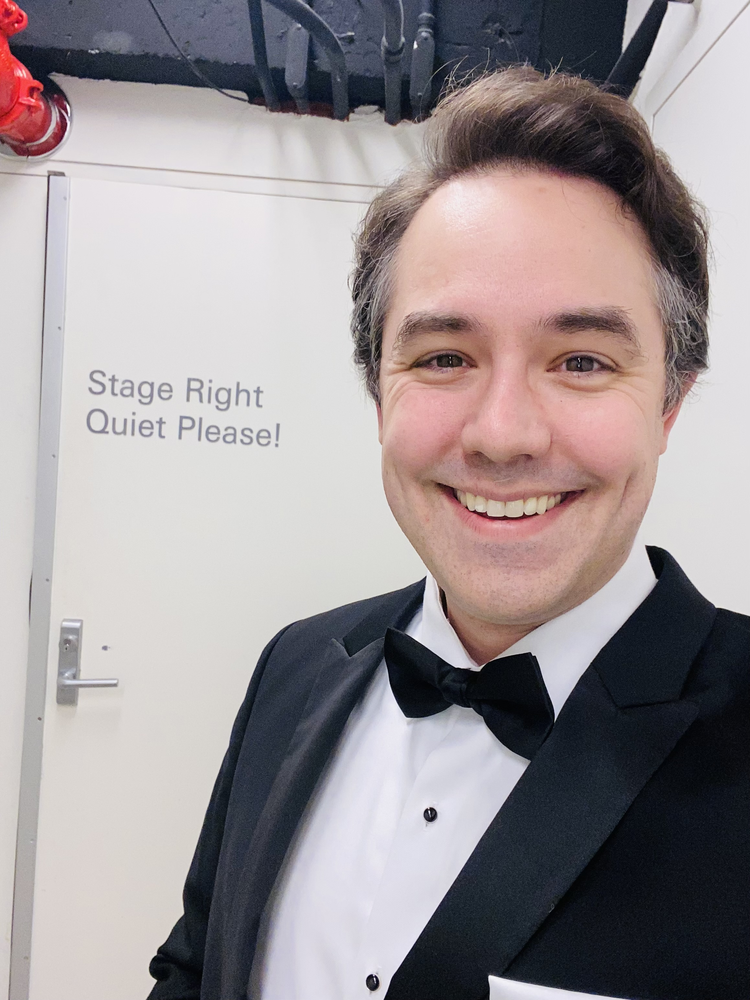
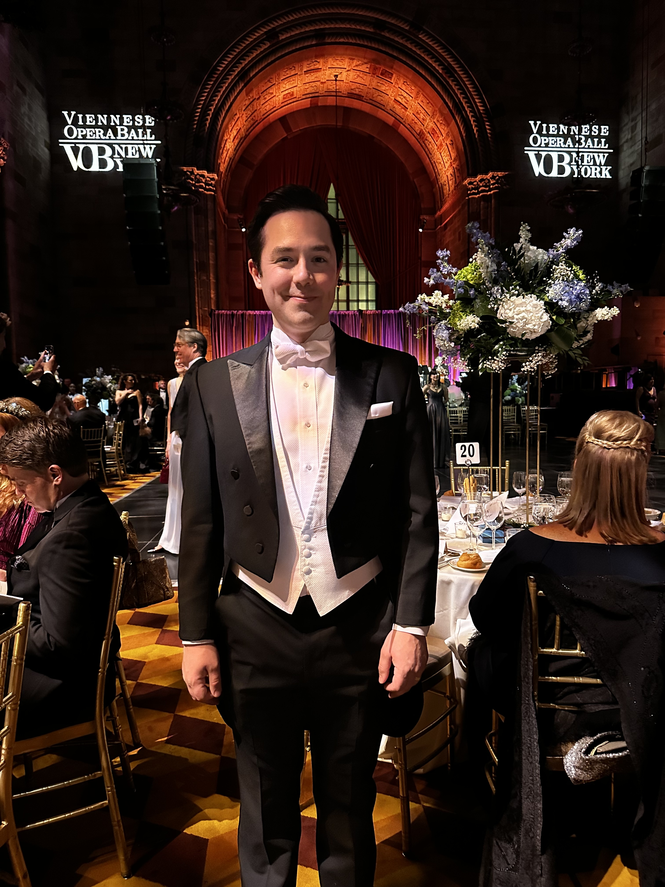
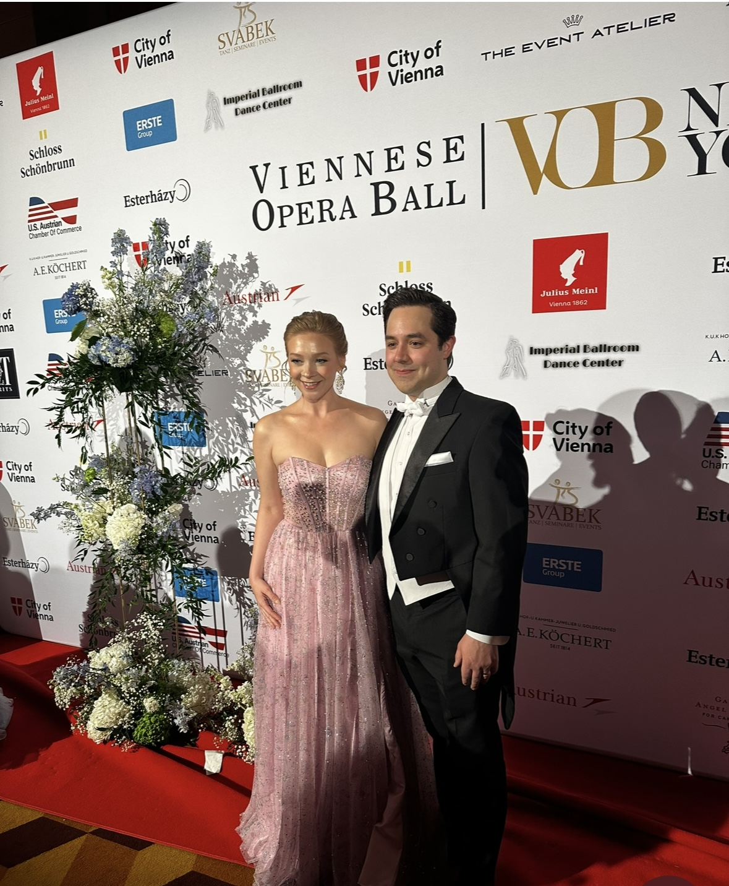

American Tenor
Lotte Lenya Competition First Prize · Opera, concert & the American stage
A tenor at home in the opera house, the concert hall and the American musical stage.

Daniel Berryman is the First Prize winner of the Kurt Weill Foundation's Lotte Lenya Competition and a 2024 semi-finalist of the Premiere Opera Foundation. From 2019 to 2024 he toured as a symphony soloist with Greenberg Artists.
On stage he has sung Anthony in Sweeney Todd at the Denver Center for the Performing Arts, Matt in The Fantasticks Off-Broadway, and Tony in West Side Story. He toured North America in Les Misérables, and he sang Fenton in Verdi's Falstaff.
He holds a B.F.A. from the University of Michigan and lives in New York.


Viennese Opera Ball · New York
The Viennese Opera Ball in New York was a remarkable evening. It brought the spirit of Vienna's great ballroom tradition to one of New York's grandest halls.
My sincere thanks to the organizers, the artists and musicians, and every guest who made the night so special. It was an honor to share in that celebration of music and of the friendship between Vienna and New York.
— Daniel
B.F.A., University of Michigan · Voice study with Bill Schuman, Ann Evans, Melody Racine and Ian Howell
For booking and inquiries
djberr@icloud.com